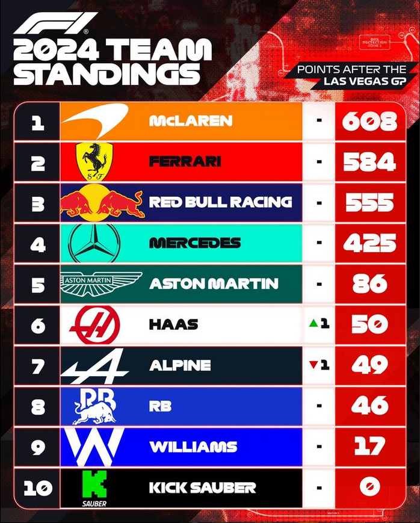

Max Verstappen rejoint Prost et Vettel
Max Verstappen est officielement champion du monde de la saison 2024 de Formule 1.

Image prise de Motorsport.com
La roue a tournée à Las Vegas.
Le grand prix de Las Vegas s'est déroulé le week-end dernier ( voir résumé ) et l'enjeu étais fort pour Max Verstappen, qui pouvait être mathématiquement champion s'il arrivait à être devant Lando Norris. Alors que Mercedes se sont surprenament imposé comme les favoris en étant les plus rapides en fp1 et fp2, George Russell a sécuriser la pole position, et il sera difficile pour Max Verstappen et Lando Norris d'arracher la victoire en partant 5e et 6e...
Les flèches d'argent dans le mile.
Mercedes sont passé un peu dans les oubliettes en cette fin de saison. Le duel pour le titre, la montée en
puissance de Ferrari, la surprise d'Alpine et les éclats des Rookies ont fait un peu disparaître Mercedes des
têtes d'affiches des news et des fans...
Comme Aston Martin, Mercedes sont dans un No man's land, ils ne peuvent
pas chercher Red Bull, mais Aston Martin sont loins de les chercher. Cependant, ce qui fait que Mercedes est dans un
No man's land est leur inconstance. En effet, la W15 peut soit gagner, soit perdre, ils ne pas tout le temps chercher
la victoire comme Mclaren, Ferrari ou Red Bull (à la limite).

Image prise du compte Instagram f1
Sauf que Las Vegas a tourné à leur avantage. Malgré qu'ils
n'ont pas le meilleur moteur, les conditions froides de Las Vegas ont vite mis dans le bain les Mercedes, qui ont fait p1
en fp1 et en fp2. Grâce à leur incroyable paire de pilotes, Mercedes maximisent facilement leurs résultats et George Russell
a signé la pole position (voir tour), Lewis Hamilton, lui a manqué sa tentative en q3, le placant 10e sur la grille...
Mais la course est longue et cette fois Lewis Hamilton a une voiture plûtot égale à celle de son coéquipier, il va rapidement
se retirer du midfield et jouer les Ferrari et Mclaren à la mi-course. L'erreur stratégique de Ferrari a aidé Lewis Hamilton
à se défaire de Carlos Sainz et prendre le devant, le doublé Mercedes était presque assuré.
George Russell en feu.
Pendant que Hamilton s'est battu avec tout le peloton, George Russell a été impérial, malgré que Charles l'a titiller, sa défense à la limite l'a laissé dans le clean air, et il a pu faire sa course sans être dérangé. Rapide, constant, alors que son coéquipier était en train de le rattraper (comme a spa), son avance lui a immunisé la victoire et George Russell a donc concrétiser sa 2ème victoire de la saison. Amplement mérité !
Video prise du compte Instagram f1
Le satellite Alpine est revenu sur Terre..
40 millions d'€, c'est ce que Alpine a potentiellement gagné à Interlagos avec leurs résultat stratosphérique. L'écurie d'Enstone
a réussi a faire un double podium, merci à Esteban Ocon et Pierre Gasly qui ont extrait tout ce qui était possible sur leurs voiture,
comme ils l'ont fait tout au long de la saison...
Alors qu'on les voyait se remettre dans le bas du peloton, Pierre Gasly en a fait des siennes et a pu emmener son Alpine en seconde grille,
dans un circuit qui leurs est complètement inapproprié...
Cependant, un peu comme Ferrari la saison dernière, Pierre Gasly n'a pas pu accrocher le rythme des top teams et s'est vite retrouvé au
mileu du peloton. A la mi-course, Pierre avait un rythme satisfaisant mais malheureusement, le moteur n'a pas pu finir le grand prix et
la voiture numéro 10 a du abandonner...
Esteban, lui, n'a pas pu chercher le top 10, il n'a pas fait la course la plus divertissante de sa saison, et pire il n'a même pas pu chercher le meilleur
tour de la course malgré une tentative de tour qualif en soft a la toute fin de course.
Image prise de Motorsport.com
M4x dans la cour des grands
Le plus grand gagnant de ce grand prix est Max Verstappen, qui a enfin sécuriser son 4ème titre de champion du monde, rejoignant des noms
iconiques tels que Alain Prost ou Sebastian Vettel.
La Red Bull n'était définidivement pas dans le jeu lors ce grand prix, les Ferrari étais
dans une bien meilleure forme, et les Mercedes se sont vus imprenables, mais les Mclaren sont dans la même situation que Red Bull.
Pour être champion du monde, il devait finir devant Lando Norris, et les choses lui ont souris puisse qu'il a réussi à se qualifier p5, juste
devant son rival.
Son intelligence de course lui a rapidement échappé des Mclaren et il a pu rester au milieu des Ferraris qui essayait de mettre Hamilton dans leurs
rétros et Max a du gérer seul sa course...
Lando Norris n'a pas pu chercher Max Verstappen et le 50ème tour a été la libération chez le clan Red Bull, Max Verstappen, comme l'a fait le premier
joyau de Red Bull Sébastian Vettel, est enfin un quadruple champion du monde, et en dirait qu'il aura soif à la fin du grand prix, au point den demander
de la bière en pleine conférence de presse !